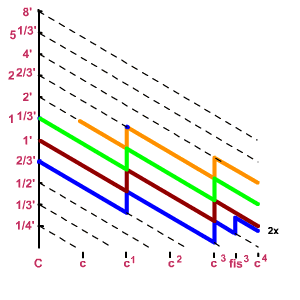
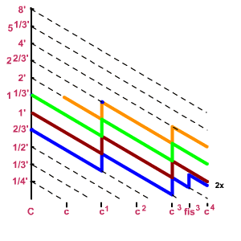

Zvukové imitátory
Druhou velkou skupinou smíšenıch hlasù jsou tzv. zvukové imitátory (enské mixtury). Jsou tvoøeny dvìmi a více øadami píšal (vìtšinou v kvintovıch a terciovıch polohách, v souèasné dobì se pouívají i další polohy pro zdùraznìní nìkterıch harmonickıch), které vıslednou barvou zvuku napodobují urèitı (vìtšinou dechovı) nástroj nebo jazykovı rejstøík pomocí retnıch píšal (vìtšinou širokıch fléten). Na rozdíl od mixtur zvukové imitátory vìtšinou nerepetují (viz dále popis repetice). Nejznámìjším imitátorem je Kornet. Staví se tøíøadı a pìtiøadı (nejvyšší øada je v terciové poloze). Zaèíná vìtšinou a v sólové èásti klaviatury (od poloviny malé oktávy, nìkdy a od c1, pokud je stavìn v celém rozsahu klaviatury, pak v basu nemá plnı poèet øad, horní øady se pøipojují a pozdìji). Jeho konstrukèní zvláštností je i umístìní v nástroji, zpravidla se staví na vyvıšené píšalnice nad ostatní hlasy, jeho zvuk tak lépe vynikne (kornet je typicky sólovı rejstøík):

Jednotlivé sbory jsou u tøíøadého provedení v polohách 22/3' + 2' + 13/5', u pìtiøadého jsou pøidány ještì polohy 8' + 4'. V menších varhanách je Kornet èasto tvoøen kombinací jinıch rejstøíkù (nejvyšší poloha 8’ Flétnou trubicovou èi Krytem, øada 4’ Principálem, 22/3' kvintová øada cylindickou, polokrytou nebo kónickou Flétnou èi Krytem, øada 2’ opìt Principálem a 13/5' terciová øada je buï samostatná nebo z cylindické èi kónické flétny, obecnì tedy kombinací flétnovıch a principálovıch hlasù v pøíslušné poloze). Monımi obmìnami Kornetu jsou Septimovı a Nonovı kornet a Kornetová mixtura, Píšala šelestivá, Kvinta šustivá, Seskvialtera a Tercián (další podrobnosti napø. v encyklopedii varhanních hlasù).
Oznaèení rejstøíku odpovídá zvyklostem pøi oznaèovaní smíšenıch hlasù
– napø. Kornet 8’ – 5x (nejniší øada
je v základní poloze a rejstøík je pìtiøadı).


 
